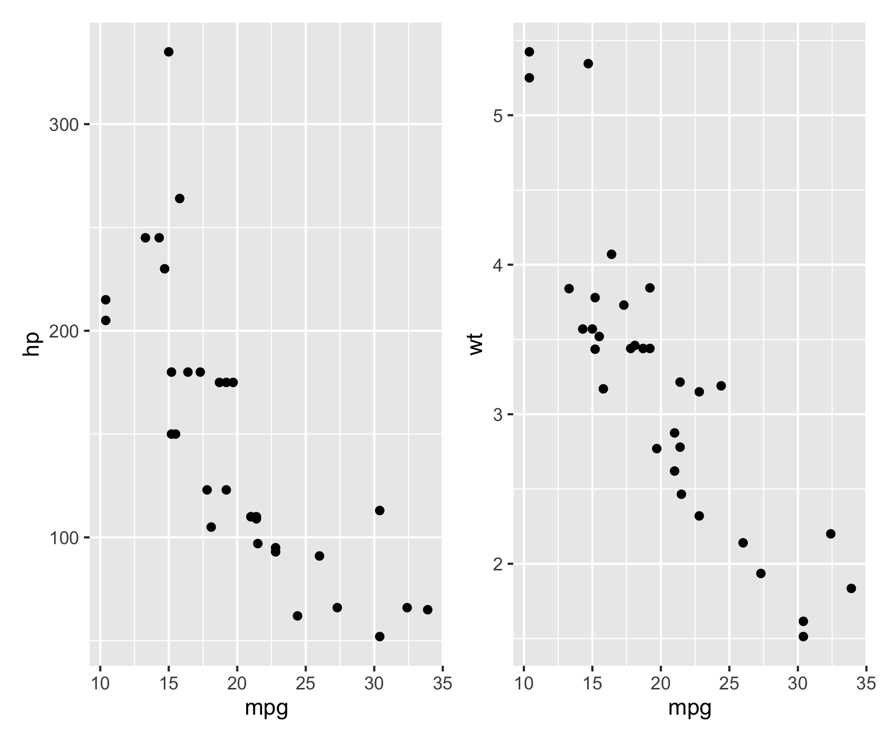

Lab 1: Data Science Tools
Public Health & Time: COVID Trends
In this lab you will practice data wrangling and visualization skills using COVID-19 data curated by the New York Times. This data is a large dataset measuring the cases and deaths per US county across the lifespan of COVID from its early beginnings to just past the peak. The data stored in daily cummulative counts, is a great example of data that needs to be wrangled and cleaned before any analysis can be done.
Set-up
- Create a
csu-523crepository - Instatiate it with a git archive (
usethis::use_git()) and Github repo (usethis::use_github()) - Create a new Quarto (.qmd) file called
lab-01.qmd - Populate its YML with a title, author, subtitle, output type and theme. For example:
Code
---
title: "Lab 1: COVID-19"
subtitle: 'Ecosystem Science and Sustainability 523c'
author:
- name: ...
email: ...
format: html
---Libraries
You will need a few libraries for this lab. Make sure they are installed and loaded in your Qmd:
tidyverse(data wrangling and visualization)flextable(make nice tables)zoo(rolling averages)
Data
We are going to practice some data wrangling skills using a real-world dataset about COVID cases curated and maintained by the New York Times. The data was used in the peak of the pandemic to create reports and data visualizations like this, and are archived on a GitHub repo here. A history of the importance can be found here.
Lets pretend it in Feb 1st, 2022. You are a data scientist for the state of Colorado Department of Public Health (this is actually a task I did in California!). You’ve been tasked with giving a report to Governor Polis each morning about the most current COVID-19 conditions at the county level.
As it stands, the Colorado Department of Public Health maintains a watch list of counties that are being monitored for worsening corona virus trends. There are six criteria used to place counties on the watch list:
- Doing fewer than 150 tests per 100,000 residents daily (over a 7-day average)
- More than 100 new cases per 100,000 residents over the past 14 days…
- 25 new cases per 100,000 residents and an 8% test positivity rate
- 10% or greater increase in COVID-19 hospitalized patients over the past 3 days
- Fewer than 20% of ICU beds available
- Fewer than 25% ventilators available
Of these 6 conditions, you are in charge of monitoring condition number 2.
Question 1: Daily Summary
Looking at the README in the NYT repository we read:
“We are providing two sets of data with cumulative counts of coronavirus cases and deaths: one with our most current numbers for each geography and another with historical data showing the tally for each day for each geography … the historical files are the final counts at the end of each day … The historical and live data are released in three files, one for each of these geographic levels: U.S., states and counties.”
For this lab we will use the historic, county level data which is stored as a CSV at this URL:
Code
https://raw.githubusercontent.com/nytimes/covid-19-data/master/us-counties.csvTo start, you should set up a reproducible framework to communicate the following in a way that can be updated every time new data is released (daily):
- cumulative cases in the 5 worst counties
- total NEW cases in the 5 worst counties
- A list of safe counties
You should build this analysis so that running it will extract the most current data straight from the NY-Times URL and the state name and date are parameters that can be changed allowing this report to be run for other states/dates.
Steps:
- Start by reading in the data from the NY-Times URL with
read_csv(make sure to attach thetidyverse). The data read from Github is considered our “raw data”. Remember to always leave “raw-data-raw” and to generate meaningful subsets as you go.
Code
library(tidyverse)
library(flextable)
data <- read_csv('https://raw.githubusercontent.com/nytimes/covid-19-data/master/us-counties.csv')Create an object called
my.dateand set it as “2022-02-01” - ensure this is adateobject.Create a object called
my.stateand set it to “Colorado”.
Tip
In R, as.Date() is a function used to convert character strings, numeric values, or other date-related objects into Date objects. It ensures that dates are stored in the correct format for date-based calculations and manipulations.
Code
txt <- "2025-02-15"
class(txt)[1] "character"Code
date_example <- as.Date(txt)
class(date_example)[1] "Date"Code
my.date <- as.Date("2022-02-01")
my.state <- "Colorado"- Start by making a subset that limits the data to Colorado (
filter), and add a new column (mutate) with the daily new cases usingdiff/lagby county (group_by). Do the same for new deaths. If lag is new to you,lagis a function that shifts a vector by a specified number of positions. The help file can be found with?lag.
(Hint: you will need some combination of filter, group_by, arrange, mutate, diff/lag, and ungroup)
- Using your subset, generate (2) tables. The first should show the 5 counties with the most CUMULATIVE cases on you date of interest, and the second should show the 5 counties with the most NEW cases on that same date. Remember to use your
my.dateobject as a proxy for today’s date:
Your tables should have clear column names and descriptive captions.
(Hint: Use flextable::flextable() and flextable::set_caption())
Question 2: Evaluating Census Data (EDA)
Raw count data can be deceiving given the wide range of populations in Colorado countries. To help us normalize data counts, we need additional information on the population of each county.
Population data is offered by the Census Bureau and can be found here.
Code
pop_url <- 'https://www2.census.gov/programs-surveys/popest/datasets/2020-2023/counties/totals/co-est2023-alldata.csv'
FIPs codes: Federal Information Processing
How FIPS codes are used
- FIPS codes are used in census products
- FIPS codes are used to identify geographic areas in files
- FIPS codes are used to identify American Indian, Alaska Native, and Native Hawaiian (AIANNH) areas
How FIPS codes are structured
- The number of digits in a FIPS code depends on the level of geography
- State FIPS codes have two digits
- County FIPS codes have five digits, with the first two digits representing the state FIPS code
You notice that the COVID data provides a 5 digit character FIP code representing the state in the first 2 digits and the county in the last 3. In the population data, the STATE and COUNTY FIP identifiers are seperate columns. To make these compatible we need to create a FIP variable that concatinates the 2 digit STATE and the 3 digit COUNTY FIP.
Concatinating Strings.
In R, paste() provides a tool for concatenation. paste() can do two things:
- concatenate values into one “string”, e.g. where the argument
sepspecifies the character(s) to be used between the arguments to concatenate, or
Code
paste("Hello", "world", sep=" ")[1] "Hello world"collapsespecifies the character(s) to be used between the elements of the vector to be collapsed.
Code
paste(c("Hello", "world"), collapse="-")[1] "Hello-world"In R, it is so common to want to separate no separator (e.g. paste(“Hello”, “world”, sep=““)) that the short cutpaste0` exists:
Code
paste("Hello", "world", sep = "")[1] "Helloworld"Code
paste0("Hello", "world")[1] "Helloworld"Steps:
- Given the above URL, and guidelines on string concatenation, read in the population data and (1) create a five digit FIP variable and only keep columns that contain “NAME” or “2021” (remember the tidyselect option found with
?dplyr::select). Additionally, remove all state level rows (e.g. COUNTY FIP == “000”)
- Now, explore the data … what attributes does it have, what are the names of the columns? Do any match the COVID data we have? What are the dimensions… In a few sentences describe the data obtained after modification:
(Hint: names(), dim(), nrow(), str(), glimpse(), skimr,…))
Question 3: Per Capita Summary
Join the population data to the Colorado COVID data and compute the per capita cumulative cases, per capita new cases, and per capita new deaths:
Generate (2) new tables. The first should show the 5 counties with the most cumulative cases per capita on your date, and the second should show the 5 counties with the most NEW cases per capita on the same date. Your tables should have clear column names and descriptive captions.
(Hint: Use `flextable::flextable() and flextable::set_caption())
Question 4: Rolling thresholds
Filter the merged COVID/Population data for Colorado to only include the last 14 days. Remember this should be a programmatic request and not hard-coded.
Then, use the group_by/summarize paradigm to determine the total number of new cases in the last 14 days per 100,000 people.
Print a table of the top 5 counties (consider slice_max), and, report the number of counties that meet the watch list condition: “More than 100 new cases per 100,000 residents over the past 14 days…”
(Hint: Dates are numeric in R and thus operations like max min, -, +, >, and< work.)
Question 5: Death toll
Given we are assuming it is February 1st, 2022. Your leadership has now asked you to determine what percentage of deaths in each county were attributed to COVID last year (2021). You eagerly tell them that with the current Census data, you can do this!
From previous questions you should have a data.frame with daily COVID deaths in Colorado and the Census based, 2021 total deaths. For this question, you will find the ratio of total COVID deaths per county (2021) of all recorded deaths. In a plot of your choosing, visualize all counties where COVID deaths account for 20% or more of the annual death toll.
Dates in R
To extract a element of a date object in R, the lubridate package (part of tidyverse) is very helpful:
Code
tmp.date = as.Date("2025-02-15")
lubridate::year(tmp.date)[1] 2025Code
lubridate::month(tmp.date)[1] 2Code
lubridate::yday(tmp.date)[1] 46Question 6: Multi-state
Congratulations! You have been promoted to the National COVID-19 Task Force.As part of this exercise, you have been tasked with building anaylsis to compare states to each other.
In this question, we are going to look at the story of 4 states and the impact scale can have on data interpretation. The states include: New York, Colorado, Alabama, and Ohio.
Your task is to make a faceted bar plot showing the number of daily, new cases at the state level.
Steps:
- First, we need to
group/summarizeour county level data to the state level,filterit to the four states of interest, and calculate the number of daily new cases (diff/lag) and the 7-day rolling mean.
Rolling Averages
The rollmean function from the zoo package in R is used to compute the rolling (moving) mean of a numeric vector, matrix, or zoo/ts object.
rollmean(x, k, fill = NA, align = "center", na.pad = FALSE)
- x: Numeric vector, matrix, or time series.
- k: Window size (number of observations).
- fill: Values to pad missing results (default NA).
- align: Position of the rolling window (“center”, “left”, “right”).
- na.pad: If TRUE, pads missing values with NA.
Examples
- Rolling Mean on a Numeric Vector Since
align = "center"by default, values at the start and end are dropped.
Code
library(zoo)
# Sample data
x <- c(1, 2, 3, 4, 5, 6, 7, 8, 9, 10)
# Rolling mean with a window size of 3
rollmean(x, k = 3)[1] 2 3 4 5 6 7 8 9- Rolling Mean with Padding Missing values are filled at the start and end.
Code
rollmean(x, k = 3, fill = NA) [1] NA 2 3 4 5 6 7 8 9 NA- Aligning Left or Right The rolling mean is calculated with values aligned to the left or right
Code
rollmean(x, k = 3, fill = NA, align = "left") [1] 2 3 4 5 6 7 8 9 NA NACode
rollmean(x, k = 3, fill = NA, align = "right") [1] NA NA 2 3 4 5 6 7 8 9Hint: You will need two group_by calls and the zoo::rollmean function.
- Using the modified data, make a facet plot of the daily new cases and the 7-day rolling mean. Your plot should use compelling geoms, labels, colors, and themes.
- The story of raw case counts can be misleading. To understand why, lets explore the cases per capita of each state. To do this, join the state COVID data to the population estimates and calculate the \(new cases / total population\). Additionally, calculate the 7-day rolling mean of the new cases per capita counts. This is a tricky task and will take some thought, time, and modification to existing code (most likely)!
Hint: You may need to modify the columns you kept in your original population data. Be creative with how you join data (inner vs outer vs full)!
- Using the per capita data, plot the 7-day rolling averages overlying each other (one plot) with compelling labels, colors, and theme.
- Briefly describe the influence scaling by population had on the analysis? Does it make some states look better? Some worse? How so?
…
Question 7: Space & Time
You’ve now been tasked with understanding how COVID has spread through time across the country. You will do this by calculating the Weighted Mean Center of the COVID-19 outbreak to better understand the movement of the virus through time.
To do this, we need to join the COVID data with location information. I have staged the latitude and longitude of county centers here. For reference, this data was processed like this:
Code
counties = USAboundaries::us_counties() %>%
dplyr::select(fips = geoid) %>%
sf::st_centroid() %>%
dplyr::mutate(LON = sf::st_coordinates(.)[,1],
LAT = sf::st_coordinates(.)[,2]) %>%
sf::st_drop_geometry()
write.csv(counties, "../resources/county-centroids.csv", row.names = FALSE)Please read in the data (readr::read_csv()); and join it to your raw COVID-19 data using the fips attributes using the following URL:
Code
'https://raw.githubusercontent.com/mikejohnson51/csu-ess-330/refs/heads/main/resources/county-centroids.csv'[1] "https://raw.githubusercontent.com/mikejohnson51/csu-ess-330/refs/heads/main/resources/county-centroids.csv"- The mean center of a set of spatial points is defined as the average X and Y coordinate. A weighted mean center can be found by weighting the coordinates by another variable such that:
\[X_{coord} = \sum{(X_{i} * w_{i})} / \sum(w_{i})\] \[Y_{coord} = \sum{(Y_{i} * w_{i})}/ \sum(w_{i})\]
- For each date, calculate the Weighted Mean \(X_{coord}\) and \(Y_{coord}\) using the daily cumulative cases and deaths as the respective \(w_{i}\).
Make two plots next to each other (using patchwork) showing cases in navy and deaths in red. Once complete, describe the differences in the plots and what they mean about the spatial patterns seen with COVID impacts. These points should be plotted over a map of the USA states which can be added to a ggplot object with:
Code
borders("state", fill = "gray90", colour = "white")(feel free to modify fill and colour (must be colour (see documentation)))
Multiplots
patchwork is an R package designed for combining multiple ggplot2 plots into a cohesive layout.
Key Features:
- Simple Composition: Use +, /, and | operators to arrange plots intuitively.
- Flexible Layouts: Supports nesting, alignment, and customized positioning of plots.
- Annotation and Styling: Add titles, captions, and themes across multiple plots.
Example:
Code
library(patchwork)
p1 <- ggplot(mtcars, aes(mpg, hp)) + geom_point()
p2 <- ggplot(mtcars, aes(mpg, wt)) + geom_point()
p1 | p2 # Arrange side by side
This places p1 and p2 next to each other in a single figure.
Question 8: Trends
OK! This is a job well done. As your final task, your leadership has noticed that it is much easier to have a solid record of deaths, while a record of cases relies on testing protocols and availability. They ask you to explore the relationship between cases and deaths to see if deaths can be used as a proxy for cases. You will explore the relationship between cases and deaths along with other predictors of your chosing from the population data.
Data Preparation
Let’s start with the raw COVID dataset, and compute county level daily new cases and deaths (
lag). Then, join it to the census data in order to use population data in the model.We are aware there was a strong seasonal component to the spread of COVID-19. To account for this, lets add a new column to the data for year (
lubridate::year()), month (lubridate::month()), andseason(dplyr::case_when()) which will be one of four values: “Spring” (Mar-May), “Summer” (Jun-Aug), “Fall” (Sep-Nov), or “Winter” (Dec - Jan) based on the computed Month.Next, lets group the data by state, year, and season and summarize the total population, new cases, and new deaths per grouping.
Given the case/death counts are not scaled by population, we expect that each will exhibit a right skew behavior (you can confirm this with density plots, shapiro.test, or histrograms). Given an assumption of linear models is normality in the data, let’s apply a log transformation to cases, deaths, and population to normalize them.
Note
We know there are 0’s in the data (cases/deaths), so we can add 1 to the data before taking the log. As the log of 0 is undefined, adding 1 ensures that the log of 0 is -Inf.
Code
log(0)[1] -InfModel Building
Once the data has been prepared, build a linear model (
lm) to predict the log of cases using the log of deaths the log of population, and the season. Be sure to add an interaction term for population and deaths since they per capita realtionship is significant!Once the model is built, summarize it (summary) and report the R-squared value and the p-value of the model. What does this mean for the value of its application?
Question 9: Evaluation
Now that you have built a model, it is time to evaluate it.
Start by using
broom::augmentto generate a data frame of predictions and residuals.Lets, create a scatter plot of the predicted cases vs. the actual cases. Add a line of best fit to the plot, and make the plot as appealing as possible using
themes,scales_*, andlabels.Describe the realtionship that you see… are you happy with the model?A final assumption of an appropriate model is that the residuals are normally distributed. Fortunatly
broom::augmentprovides the .resid outputs for each feature. To visually check for residual normality, create a histogram of the residuals. Make the plot as appealing as possible usingthemes,scales_*, andlabels.How does the distribution look? Was a linear model appropriate for this case?
Summary
And that’s it! In this lab we have explored the COVID-19 data from the New York Times, wrangled it, and built a model to predict cases from deaths and population. This is a great example of how data science can be used to inform public health decisions.
We covered alot of technical tools as well spanning readr, dplyr, ggplot, lubridate, and more. We also used some more advanced tools like zoo for rolling averages and broom for model evaluation.
Through out the rest of class we will keep building on these skills and tools to become better data scientists.
Rubric
Total: 150 points
Submission
To submit your lab, you will deploy your knitted HTMLto a webpage hosted with GitHub pages. To do this:
- Knit your lab document
- Stage/commit/push your files
- Activate Github Pages (GitHub –> Setting –> GitHub pages)
- If you followed the naming conventions in the “Set Up”, your link will be available at:
https://USERNAME.github.io/csu-523c/lab-01.html
Submit this URL in the appropriate Canvas dropbox. Also take a moment to update your personal webpage with this link and some bullet points of what you learned. While not graded as part of this lab, it will be eventually serve as extras credit!